Tema 3.B.24
Análisis de los instrumentos de renta fija. Determinación del precio y rendimiento de los bonos. La estructura temporal de los tipos de interés. Valoración del riesgo y del rendimiento de los bonos: duración y convexidad.
Renta fija: precio y TIR de los bonos, curva de tipos (expectativas, prima por liquidez, hábitat, Nelson-Siegel), duración, convexidad e inmunización.
Exclusivo Material exclusivo de victorgutierrezmarcos.es y la app Oposición TCEE · DCE. Puedes usarlo libremente para tu estudio personal. No se autoriza su incorporación a otras plataformas, aplicaciones o servicios. Condiciones de uso.
Introducción
Enganche:
«¡Cuán largo me lo fiáis!», responde don Juan en El burlador de Sevilla cada vez que le recuerdan que todo se acaba pagando. Prestar a 100 años es fiar muy largo.
En junio de 2020, Austria colocó un bono a 100 años con un cupón del 0,85 %. Quien lo compró se aseguraba cobrar cada año sus cupones y recuperar su dinero en 2120, de uno de los Estados más solventes del mundo.
Cuando los tipos de interés subieron en 2022 y 2023, ese bono pasó de valer unos 139 euros por cada 100 de nominal a unos 33, sin que Austria dejara de pagar un solo cupón. Lo que perdió valor no fue la promesa, sino el plazo.
¿Cómo puede perder tres cuartas partes de su valor un activo de «renta fija»? Detrás está la pregunta de esta exposición: ¿cuánto vale una promesa de pago futura, por qué se paga distinto según el plazo y cuánto riesgo tiene una inversión que parece segura?
Relevancia:
Microeconómica: los bonos permiten a los Estados y a las empresas financiarse sin ceder la propiedad, y a los ahorradores, trasladar renta en el tiempo con unos pagos conocidos de antemano; su precio fija el coste de la deuda de toda la economía [ver tema 3.B.3].
Macroeconómica: el déficit público se financia emitiendo renta fija [ver tema 3.A.39]; la política monetaria compra y vende bonos y, a través de la curva de tipos, llega al consumo y a la inversión [ver tema 3.A.37]; y la pendiente de esa curva es uno de los mejores indicadores adelantados del ciclo.
Dimensión: a finales de 2025 había en el mundo 160,7 billones de dólares en títulos de renta fija, más que el valor de todas las bolsas, 157,8 billones.
Contextualización:
Inversión y sistema financiero: una inversión es el compromiso presente de dinero o de otros recursos con la expectativa de obtener beneficios futuros, y tiene 2 dimensiones, el tiempo y el riesgo.1 El sistema financiero canaliza el ahorro de quien gasta menos de lo que gana hacia quien quiere gastar más: un trabajador que ahorra para su jubilación puede prestar a la empresa que necesita comprar maquinaria, y los 2 salen ganando.
Las 3 familias de activos financieros:
los de renta variable, que dan derechos de propiedad y cuya remuneración depende de los resultados del emisor [ver tema 3.B.23];
los de renta fija, cuya remuneración fija un contrato: unos pagos determinados hasta un vencimiento;
los derivados, cuyo valor depende del precio de otro activo, el subyacente [ver tema 3.B.25].
El bono: un bono es un título que representa una parte de un préstamo: el emisor (prestatario) se compromete a pagar al tenedor (prestamista) unas cantidades fijadas en unas fechas fijadas, los cupones y, al vencimiento, el principal.2 Es el instrumento principal de la renta fija, junto con las letras, los pagarés y los depósitos.
Evolución: desde los años 70, la liberalización de los movimientos de capital y la innovación financiera multiplicaron los títulos negociables (cédulas, titulizaciones, papel comercial) frente al préstamo y al depósito tradicionales; tras 2008, los Estados y los bancos centrales pasaron a ser los mayores emisores y compradores de bonos [ver tema 3.A.40]; y hoy crecen los bonos verdes y los ligados a la sostenibilidad (anexo C).
Problemática:
¿Qué es un instrumento de renta fija y cómo se fijan su precio y su rentabilidad?
¿Por qué un mismo emisor paga tipos distintos según el plazo, y qué dice esa diferencia sobre el futuro?
Si los pagos de un bono son fijos, ¿por qué es arriesgado, y cómo se mide y se gestiona ese riesgo?
Estructura:
La exposición tiene 3 partes, que siguen el orden del título y van de lo más sencillo (un bono, un tipo) a lo más general (muchos plazos, muchos tipos) y al riesgo de la cartera:
en el bloque I, el instrumento: qué es un bono, qué tipos hay y cómo se calculan su precio y su rentabilidad;
en el bloque II, el plazo: la estructura temporal de los tipos de interés, cómo se construye, qué teorías explican su forma y qué dicen sus movimientos;
en el bloque III, el riesgo: qué riesgos tiene un bono y cómo se miden y se gestionan los de tipo de interés con la duración y la convexidad.
3.B.24. Renta fija: precio, curva de tipos, duración y convexidad
Introducción2′30″
I. Los instrumentos de renta fija: precio y rendimiento8′
1. Definición: renta fija frente a renta variable
2. Elementos de un bono
3. Tipos de bono
4. Determinación del precio de los bonos
5. Determinación del rendimiento de los bonos
II. La estructura temporal de los tipos de interés9′
1. Definición: tipos de contado, tipos a plazo y construcción
2. Teorías explicativas
3. Formas y movimientos de la curva
III. Valoración del riesgo y del rendimiento: duración y convexidad9′30″
1. Riesgos de la inversión en bonos
2. Riesgo de tipo de interés
Conclusión1′
Reparto del cante: introducción, 2′30″; I, 8′ (I.1, 1′; I.2, 1′; I.3, 1′30″; I.4, 2′30″; I.5, 2′); II, 9′ (II.1, 2′30″: tipos de contado y a plazo, 1′30″, y Nelson-Siegel-Svensson, 1′; II.2, 4′: expectativas, 1′30″, prima por liquidez, 1′, segmentación y hábitat, 1′, y modelos de Vasicek y CIR, 0′30″; II.3, 2′30″); III, 9′30″ (III.1, 1′30″; III.2, 8′: Malkiel, 1′30″, Macaulay, 2′, modificada, 1′30″, convexidad, 1′30″, y gestión, 1′30″), y conclusión, 1′. Los 4 epígrafes del título están en los 3 apartados, en su orden: los 2 primeros, en el bloque I. Las funciones clave son el precio del bono (2), el tipo largo (6) y la aproximación de la variación del precio con la duración y la convexidad (8). Un mismo bono a 2 años sirve de ejemplo en todo el tema. No se cantan las cajas grises, las notas al pie ni los anexos: son para las preguntas del tribunal.
Notación. Como en el canon del temario: \(P\) es el precio del bono, \(\mathrm{VN}\) su nominal, \(c\) la tasa de cupón y \(C_t=c\,\mathrm{VN}\) el cupón; \(\mathrm{FC}_t\) el flujo de la fecha \(t\) (el cupón y, en el vencimiento \(T\), también el nominal). \(y\) es la rentabilidad a vencimiento o TIR (en los temas de macroeconomía, \(y\) es otra cosa: el logaritmo de la producción). \(r_t\) es el tipo de contado a \(t\) años y \(f_t\) el tipo a plazo implícito para el año que va de \(t-1\) a \(t\). En las teorías de la estructura temporal, como en los temas de política monetaria [ver tema 3.A.37], \(i_t\) es el tipo a un periodo y \(i^{(n)}_t\) el tipo a \(n\) periodos en la fecha \(t\), de modo que \(r_n\equiv i^{(n)}_0\). \(D\) es la duración de Macaulay, \(D^{\mathrm{mod}}\) la modificada, \(D^{\mathrm{mon}}\) la monetaria y \(\mathrm{Conv}\) la convexidad; \(\Delta y\), la variación de la TIR. Todo en tiempo discreto y con cupones anuales; los derivados se valoran a menudo en tiempo continuo, con \(e^{-r_tt}\) [ver tema 3.B.25].
Para ampliar: las monografías de Juan Mascareñas sobre la gestión de la renta fija, la duración y la convexidad, en http://www.
I. Los instrumentos de renta fija: precio y rendimiento
Conclusión anticipada: un bono es una promesa de pagos fijados; vale lo que valen esos pagos descontados, cada uno al tipo de su plazo, y su rentabilidad a vencimiento resume esos tipos en uno solo. Por eso precio y rentabilidad se mueven siempre en sentido contrario.
Nexo: empezamos por el instrumento: qué lo distingue de una acción, qué elementos tiene, qué tipos hay y cómo se calculan su precio y su rendimiento.
I.1. Definición: renta fija frente a renta variable
Un instrumento de renta fija es un título de deuda cuya remuneración fija un contrato: el emisor se compromete a pagar unos cupones y a devolver el principal en unas fechas determinadas, pase lo que pase con sus resultados.
Se diferencia de la renta variable en 5 rasgos (tabla 1) [ver tema 3.B.23]:
Esquema de pagos: los fija el contrato, no la decisión de repartir dividendos. Aun así, el instrumento no está libre de riesgo, porque el emisor puede impagar (default).
Vencimiento: casi siempre tiene uno, en el que se devuelve el principal; la excepción es la deuda perpetua.3 Por eso el tiempo es un elemento central de estos instrumentos.
Derechos: el bonista es un acreedor, no un socio, y solo tiene derechos económicos.
Prelación: si el emisor se liquida, cobra antes que los accionistas; y, dentro de la deuda, la ordinaria antes que la subordinada, que por eso paga más.
Contabilidad: para el emisor, el bono es pasivo, y para el inversor, activo [ver tema 3.B.1].
| Renta variable (acciones) | Renta fija (bonos y obligaciones) | |
|---|---|---|
| Pagos | Dependen de los resultados y de la decisión de reparto (dividendos) | Fijados por contrato (cupones y principal) |
| Vencimiento | No tiene: se recupera vendiendo en el mercado secundario | Casi siempre tiene (salvo la deuda perpetua) |
| Derechos | Económicos y políticos: el accionista es socio | Solo económicos: el bonista es acreedor |
| Prelación | Cobra el último, tras todos los acreedores | Cobra antes que los accionistas |
| Contabilidad del emisor | Patrimonio neto | Pasivo |
| Riesgo | Mayor: el accionista es el titular residual | Menor, pero con riesgo de impago y de tipo de interés |
Fuente: elaboración propia a partir de Bodie, Kane y Marcus (2021, cap. 2) y de la Jefatura del Estado (2010). En fondo salvia, la consecuencia de las 5 diferencias.
I.2. Elementos de un bono
Los elementos de un bono son (figura 1):
el emisor o prestatario, que se financia, y el tenedor o prestamista, que invierte;
el valor nominal \(\mathrm{VN}\) (o facial), el principal sobre el que se calculan los cupones y que se devuelve al vencimiento;
el cupón \(C_t=c\,\mathrm{VN}\), el pago periódico de intereses, con \(c\) la tasa de cupón;4
el vencimiento \(T\), la fecha en que termina la vida del título y se amortiza, es decir, se devuelve el principal;
el precio \(P\), lo que se paga hoy por el bono, que se suele expresar en porcentaje del nominal: el bono cotiza a la par si \(P=\mathrm{VN}\), bajo la par si \(P<\mathrm{VN}\) y sobre la par si \(P>\mathrm{VN}\).
Con estos elementos, el flujo del bono en cada fecha es \(\mathrm{FC}_t=C_t\) si \(t<T\) y \(\mathrm{FC}_T=C_T+\mathrm{VN}\) al vencimiento.
Siguiendo con el ejemplo que acompaña todo el tema, un bono a 2 años con un nominal de 1.000 € y un cupón anual del 10 % paga 100 € dentro de un año y 1.100 € dentro de 2. Hoy cotiza a 922,6 €: bajo la par.
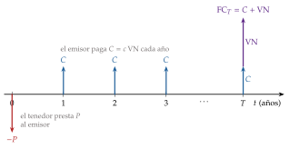
Fuente: elaboración propia.
I.3. Tipos de bono
Los bonos se clasifican con muchos criterios; 4 son los que importan para valorarlos (tabla 2). El detalle de cada clasificación, y las de los mercados, la emisión y la divisa, está en el anexo B.
Por el emisor: instituciones supranacionales, Estados soberanos, administraciones territoriales y agencias, empresas y bancos, y vehículos de titulización. Cuanto peor es la calidad crediticia del emisor, más rentabilidad exige el mercado (I.3.1).
Por el cupón: fijo; variable, con un tipo de referencia más un diferencial;5 indexado a la inflación; y cupón cero, que no paga cupones y se emite al descuento.
Por las opciones que lleva dentro [ver tema 3.B.25]:
el bono amortizable anticipadamente (callable) da al emisor el derecho a recomprarlo a un precio fijado antes del vencimiento: lo ejercerá si los tipos bajan, para refinanciarse más barato. Como el inversor le vende esa opción, exige a cambio un cupón más alto;
el bono con opción de venta (putable) da al tenedor el derecho a devolverlo al emisor a un precio fijado: lo ejercerá si los tipos suben, para reinvertir a tipos más altos. Como el inversor compra esa opción, acepta un cupón más bajo, y esa es la ventaja del emisor;
el bono convertible da al tenedor el derecho a cambiarlo por acciones del emisor en una proporción fijada;
los bonos convertibles contingentes (CoCos), propios de los bancos, se convierten en acciones o pierden su valor automáticamente, sin que lo decidan ni el emisor ni el inversor, si el capital ordinario de nivel 1 (CET1) del banco cae por debajo de un umbral, de al menos el 5,125 % de sus activos ponderados por riesgo [ver tema 3.B.3] [ver tema 3.B.27].
Por el vencimiento: en el mercado monetario se negocian los títulos a corto plazo, hasta un año (letras del Tesoro, pagarés de empresa, certificados de depósito),6 y en el mercado de capitales, los de más plazo. El Tesoro emite letras a 3, 6, 9 y 12 meses, bonos de 2 a 5 años (hoy, a 3 y 5) y obligaciones de más de 5 (hoy, a 10, 15, 30 y 50) [ver tema 4.B.26].
| Criterio | Tipos | Qué cambia para valorarlo |
|---|---|---|
| Emisor | Supranacional, soberano, territorial y agencias, empresa y banco, titulización | El diferencial de crédito sobre el tipo sin riesgo |
| Cupón | Fijo, variable, indexado, cupón cero | Si los flujos se conocen de antemano y cuánto se cobra pronto |
| Opciones | Callable, putable, convertible, CoCo | Los flujos dependen de los tipos o de las acciones |
| Vencimiento | Letras, pagarés, bonos, obligaciones, perpetua | El tipo de contado del plazo y la sensibilidad a los tipos |
Fuente: elaboración propia a partir de Bodie, Kane y Marcus (2021, cap. 14).
I.3.1. La calificación crediticia
La calificación crediticia (rating) es la opinión de una agencia sobre la capacidad y la voluntad del emisor de pagar a tiempo los intereses y el principal: mide el riesgo de crédito. Las 3 grandes agencias son S&P, Moody’s y Fitch.
La escala: va de AAA (Aaa en Moody’s), la máxima solvencia, a D, el impago. Hasta BBB\(-\) (Baa3) se habla de grado de inversión; por debajo, de grado especulativo o de alto rendimiento (high yield). La frontera importa: muchos inversores institucionales solo pueden comprar grado de inversión [ver tema 3.B.3]. España tiene hoy una A\(+\) de S&P y de Scope, una A3 de Moody’s, una A de Fitch y una A (high) de DBRS, todas con perspectiva estable: grado de inversión, 4 o 5 escalones por debajo de la AAA.
El diferencial de crédito: a igual plazo, un bono rinde más cuanto peor es su calificación. La diferencia con el bono sin riesgo del mismo plazo es el diferencial de crédito, que compensa la probabilidad de impago y la pérdida esperada, la menor liquidez y la aversión al riesgo de los inversores; junto con los impuestos, forma la estructura de riesgo de los tipos de interés.
La prima de riesgo: entre Estados de la zona del euro, el diferencial con el bono alemán a 10 años es la prima de riesgo (gráfico 1). La española llegó a 555 puntos básicos de media en julio de 2012, el máximo desde la creación del euro, y era de 45 en septiembre de 2026 [ver tema 3.A.39] [ver tema 3.B.43].
La regulación: tras su papel en la crisis de las titulizaciones, las agencias que operan en la Unión necesitan registro y supervisión de la Autoridad Europea de Valores y Mercados [ver tema 3.B.26] [ver tema 3.B.27].
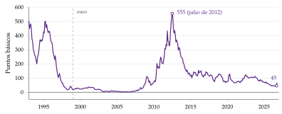
Fuente: BCE, tipos de interés a largo plazo a efectos de convergencia; diferencial, cálculo propio. Media mensual del rendimiento a 10 años de España menos el de Alemania, en puntos básicos.
I.4. Determinación del precio de los bonos
En el mercado primario, el bono sale a la par si el cupón iguala la rentabilidad que exige el mercado (lo habitual en los bonos de empresa, que fijan el cupón para colocarse cerca de la par), bajo la par si el cupón es menor (siempre en las letras y en los bonos cupón cero, que no pagan cupón) y sobre la par si es mayor. Los bonos y obligaciones del Estado se subastan por precio y pueden salir por encima o por debajo de la par, sobre todo cuando se reabre una emisión antigua con otro cupón.
En el mercado secundario, el precio lo fija el arbitraje, en 2 pasos:
Idea: un bono es una cartera de pagos futuros, y cada pago vale hoy lo que vale un euro de su fecha. Por eso el precio es el valor actual de sus flujos, descontado cada uno con el tipo de contado (spot) \(r_t\) de su plazo: el que rinde hoy un bono sin cupones que paga solo en \(t\) (figura 1), \[\tag{1} P=\sum_{t=1}^{T}\frac{\mathrm{FC}_t}{(1+r_t)^t}=\frac{C_1}{1+r_1}+\frac{C_2}{(1+r_2)^2}+\dots+\frac{C_T+\mathrm{VN}}{(1+r_T)^T}.\]
Por qué ese precio: si el bono costara menos que la suma de sus pagos valorados uno a uno, bastaría comprarlo, separarlo en sus pagos y venderlos por separado para ganar sin riesgo; y al revés. El arbitraje lleva el precio a (1). A ese precio, comprar el bono tiene un valor actual neto nulo, lo que no quiere decir que no rinda, sino que rinde exactamente lo que exige el mercado por ese plazo y ese riesgo.7
El tipo de descuento: cada \(r_t\) es el tipo sin riesgo de su plazo más una prima por el riesgo del emisor, la liquidez y el resto de riesgos (I.3.1, III.1).
Siguiendo con nuestro bono a 2 años, que cuesta 922,6 €, supongamos que un bono cupón cero a 1 año que paga 100 € cuesta 90,9 €:
el primer cupón del bono, de 100 €, vale hoy lo mismo que ese bono cupón cero: 90,9 €;
por arbitraje, el pago de 1.100 € del segundo año vale el resto, \(922{,}6-90{,}9=831{,}7\) €: es el precio de un bono cupón cero a 2 años con un nominal de 1.100 €;
los tipos de contado salen de esos precios: \(r_1=100/90{,}9-1=10{,}01\) % y \(r_2=(1.100/831{,}7)^{1/2}-1=15{,}00\) %.
Con un solo tipo: en la práctica, los bonos se cotizan con un único tipo de descuento para todos sus flujos, la rentabilidad a vencimiento o TIR del bono, \(y\) (I.5):
\[P=\sum_{t=1}^{T}\frac{\mathrm{FC}_t}{(1+r_t)^t}=\sum_{t=1}^{T}\frac{\mathrm{FC}_t}{(1+y)^t}\tag{2}\]
La primera igualdad es la del arbitraje; la segunda define \(y\). Si el cupón iguala la TIR (\(c=y\)), el bono vale la par; si es mayor, cotiza sobre la par, y si es menor, bajo la par.
Evolución con el tiempo: si la TIR no cambia, el precio converge al nominal a medida que se acerca el vencimiento (gráfico 2). El bono sobre la par baja, porque cada año queda un año menos en que su cupón supera la rentabilidad del mercado; el bono bajo la par sube, porque se acerca el cobro del nominal. En los 2 casos, el cupón más la variación del precio dan cada año exactamente la TIR.
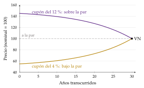
Fuente: elaboración propia a partir de Bodie, Kane y Marcus (2021, cap. 14). 2 bonos a 30 años, de nominal 100, con una TIR constante del 8 % y cupones del 12 % y del 4 %.
Entre 2 cupones: quien vende un bono entre 2 fechas de pago tiene derecho a la parte del cupón que se ha devengado mientras lo tuvo, el cupón corrido: \[\mathrm{CC}=C\cdot\frac{\text{días desde el último cupón}}{\text{días entre los 2 cupones}} .\] Los bonos cotizan por su precio limpio (ex cupón), pero el comprador paga el precio sucio, el limpio más el cupón corrido. Así, la cotización no da un salto cada vez que se paga un cupón: el que lo da es el precio sucio, que sube día a día y cae el día del pago (gráfico 3).
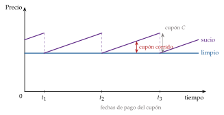
Fuente: elaboración propia a partir de Bodie, Kane y Marcus (2021, cap. 14) y Moreno y Gutiérrez (2018).
I.5. Determinación del rendimiento de los bonos
A un inversor le interesa, más que el precio, cuánto rinde el bono. Precio y rendimiento son las 2 caras de la misma moneda, y hay 3 medidas principales, de la más sencilla a la más completa.
La rentabilidad corriente (current yield) es el cupón entre el precio, \(C/P\). Es sencilla, pero olvida la ganancia o la pérdida que se obtiene al cobrar el nominal y el valor temporal del dinero.
La rentabilidad a vencimiento (yield to maturity), \(y\), es el tipo de descuento único que iguala el valor actual de los flujos con el precio: el \(y\) que resuelve (2). Es la tasa interna de rentabilidad (TIR) del bono como proyecto de inversión [ver tema 3.B.2].
Sus 3 supuestos: la TIR es lo que se gana si se cumplen 3 condiciones:
que se mantiene el bono hasta el final;
que el emisor paga, en la cuantía y la fecha acordadas;
que los cupones se reinvierten a esa misma tasa.
Relación inversa con el precio: para un bono ya emitido, con los flujos fijados, cuanto más alto el precio, más baja la TIR, y la relación es convexa (gráfico 4). Si los tipos de mercado suben, los bonos ya emitidos pierden valor, porque los nuevos pagan más [ver tema 3.A.35].
Estática comparativa: la TIR sube con el cupón y baja con el precio; con el vencimiento, depende: alargar el plazo sube la TIR de un bono sobre la par y la baja de uno bajo la par.
Qué es y qué no es: es un promedio de los tipos de contado de los plazos del bono, ponderado por sus flujos, no el tipo de interés de un plazo. En nuestro bono, la TIR es del 14,75 %: entre el 10,01 % del primer año y el 15,00 % del segundo, y muy cerca de este porque casi todo el valor se cobra al final. Por eso 2 bonos al mismo plazo y con cupones distintos tienen TIR distintas aunque la curva sea la misma (efecto cupón), y comparar bonos solo por su TIR puede engañar.
Variantes:
si el bono es amortizable anticipadamente, la rentabilidad hasta la amortización (yield to call) es la TIR suponiendo que el emisor lo amortiza en la primera fecha posible, \(T_c\), al precio de amortización, \(P_c\); se compara con la TIR y se toma la menor;
la rentabilidad realizada (al horizonte \(H\)) es la que de verdad se obtiene con los tipos a los que se reinvierten los cupones y el precio al que se vende el bono en \(H\). Coincide con la TIR solo si se cumplen los 3 supuestos; es la que protege la inmunización (III.2.5);
las letras del Tesoro no pagan cupón: se emiten al descuento y, a un año o menos, su rentabilidad se calcula con interés simple y base 360, \(P=\mathrm{VN}/(1+y\,d/360)\), con \(d\) los días hasta el vencimiento.
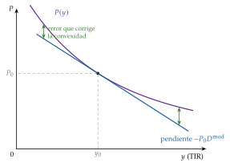
Fuente: elaboración propia a partir de Bodie, Kane y Marcus (2021, cap. 16). La recta es la aproximación de la duración modificada (III.2.3) y la distancia vertical a la curva, el error que corrige la convexidad (III.2.4).
Con opciones, el precio ya no depende solo de la TIR, sino también de la probabilidad de que se ejerza la opción (gráfico 5):
en el callable, si los tipos bajan mucho, el precio deja de subir y se queda cerca del precio de amortización, porque el emisor lo recomprará: la curva precio-rentabilidad se dobla hacia abajo y la convexidad se vuelve negativa (III.2.4); si los tipos son altos, se comporta como un bono ordinario;
en el putable, si los tipos suben mucho, el precio deja de bajar, porque el tenedor lo devolverá al precio pactado: la curva tiene un suelo.
Recapitulación: el precio de un bono es el valor de sus flujos con los tipos de cada plazo, y la TIR los resume en uno. Para valorar bien hay que conocer esos tipos de cada plazo: la curva de tipos.
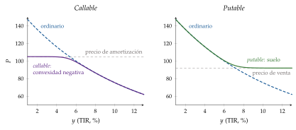
Fuente: elaboración propia a partir de Bodie, Kane y Marcus (2021, cap. 14) y AnalystNotes (2022).
II. La estructura temporal de los tipos de interés
Conclusión anticipada: el tipo largo es la media de los tipos cortos que se esperan más una prima por plazo. Por eso la curva sirve a la vez para valorar los bonos, para leer lo que el mercado espera de los tipos y del ciclo y para que el banco central llegue a los tipos largos.
Nexo: una vez visto un bono con un solo tipo, pasamos a la relación entre los tipos y el plazo: cómo se define, cómo se construye, qué teorías la explican y qué dicen sus formas y sus movimientos.
II.1. Definición: tipos de contado, tipos a plazo y construcción de la curva
La estructura temporal de los tipos de interés (ETTI) es la relación, en una fecha, entre los tipos de contado y su plazo, \(r_1, r_2, \dots, r_T\), para títulos del mismo emisor o de la misma calidad crediticia. Su gráfico es la curva de tipos.8
Por qué sirve para valorar: cada flujo de un bono se descuenta con el tipo de su plazo (1), y el tipo de contado de cada plazo es la rentabilidad de un bono cupón cero a ese plazo, que existe de verdad: los strips.
Los bonos y obligaciones del Estado español son segregables desde julio de 1997: cada uno se puede separar en tantos bonos cupón cero como pagos tiene (un bono a 5 años da 6 strips, 5 de cupón y 1 del principal), negociarlos por separado y reconstituirlo después.9
Si el bono valiera algo distinto de la suma de sus strips, se ganaría sin riesgo separándolo o reconstituyéndolo: el arbitraje obliga a que la curva cupón cero valore a la vez todos los bonos del mismo emisor.
II.1.1. Tipos de contado y tipos a plazo
El tipo de contado es el que el mercado aplica hoy a un préstamo que empieza hoy; el tipo a plazo (forward) \(f_t\), el que se puede pactar hoy para un préstamo que empezará en \(t-1\) y vencerá en \(t\). No hace falta un mercado de forwards: la curva de contado ya lo implica.
Invertir 1 euro a \(t\) años tiene que dar lo mismo, sin riesgo, que invertirlo a \(t-1\) años y pactar hoy reinvertirlo el año siguiente al tipo a plazo: \[\tag{3} (1+r_t)^t=(1+r_{t-1})^{t-1}\,(1+f_t) \quad\Longleftrightarrow\quad 1+f_t=\frac{(1+r_t)^t}{(1+r_{t-1})^{t-1}} .\] Encadenando, \((1+r_n)^n=(1+r_1)(1+f_2)\cdots(1+f_n)\): el tipo de contado a \(n\) años es la media geométrica del tipo a 1 año y de los tipos a plazo de los años siguientes. Si la curva es creciente, los tipos a plazo están por encima de los de contado.
Con nuestro bono, \(1+f_2=1{,}15^2/1{,}1001\), así que \(f_2=20{,}22\) %: la curva sube con fuerza porque el tipo implícito para el segundo año dobla al del primero. En aproximación lineal, \(f_2\simeq2r_2-r_1=20{,}0\) %.
II.1.2. Cómo se construye la curva: el bootstrapping
Los strips y las letras no cubren todos los plazos ni son siempre líquidos, así que la curva se estima con los precios de los bonos con cupón. El método más sencillo es el bootstrapping:
Paso 1: el tipo a 1 año, \(r_1\), sale de una letra o de un bono que vence en un año.
En nuestro ejemplo, \(r_1=10{,}01\) %.
Paso 2: con \(r_1\) conocido, el precio de un bono a 2 años da \(r_2\), que es la única incógnita de (1).
En nuestro ejemplo, \(r_2=15{,}00\) %: es lo que se hizo en el apartado I.4.
Paso 3: con \(r_1\) y \(r_2\), el bono a 3 años da \(r_3\), y así sucesivamente, de menor a mayor plazo.
Es exacto, pero necesita un bono por plazo y la curva sale a saltos, sensible a cualquier precio raro. Por eso los bancos centrales ajustan una forma funcional a toda la curva.
II.1.3. El modelo de Nelson-Siegel-Svensson
a) Idea
En lugar de un tipo por bono, suponer que toda la curva tiene una forma suave que depende de muy pocos parámetros, y elegirlos para que los precios teóricos se parezcan lo más posible a los de mercado. Lo propusieron Charles Nelson y Andrew Siegel (1987) con 3 factores, y Lars Svensson (1994) lo amplió con un cuarto.
b) Modelo
i) Supuestos
El tipo de contado a \(n\) años es una función suave del plazo, la misma para todos los bonos del emisor.
Los tipos a muy largo plazo tienden a un nivel constante, y el tipo a plazo cero es el tipo más corto.
ii) Desarrollo
La curva de Svensson, con \(n\) el plazo en años, es \[\tag{4} r(n)=\beta_0+\beta_1\,\frac{1-e^{-n/\tau_1}}{n/\tau_1}+\beta_2\Big[\frac{1-e^{-n/\tau_1}}{n/\tau_1}-e^{-n/\tau_1}\Big]+\beta_3\Big[\frac{1-e^{-n/\tau_2}}{n/\tau_2}-e^{-n/\tau_2}\Big];\] sin el último término es la de Nelson y Siegel. Las \(\beta\) son locales de este modelo: no son la beta del CAPM.
Qué es cada parámetro (gráfico 6):
\(\beta_0\) es el nivel, el tipo al que tiende la curva a muy largo plazo, porque los otros términos se anulan cuando \(n\) crece;
\(\beta_1\) es la pendiente: su término pesa 1 en el plazo cero y se va apagando, así que el tipo más corto es \(\beta_0+\beta_1\) y la curva sube si \(\beta_1<0\);
\(\beta_2\) y \(\beta_3\) son la curvatura: sus términos valen cero en los 2 extremos y forman una joroba (o un valle, si son negativos) en los plazos intermedios, cerca de \(\tau_1\) y de \(\tau_2\).
Los parámetros se eligen cada día para que los precios que da (1) con esa curva se acerquen lo más posible a los observados.
iii) Implicaciones
Con 4 a 6 números se resume toda la curva, y se obtienen tipos de contado y a plazo para cualquier plazo, aunque no haya bonos de ese plazo.
Los 3 factores son los 3 movimientos que se observan en la curva: nivel, pendiente y curvatura (II.3.2).
c) Extensiones
Francis Diebold y Canlin Li (2006) dejan fijo \(\tau_1\) y tratan \(\beta_0\), \(\beta_1\) y \(\beta_2\) como factores de nivel, pendiente y curvatura que cambian cada día y siguen un proceso autorregresivo: así la curva se puede predecir.
d) Evidencia empírica
El BCE publica cada día con el modelo de Svensson la curva de la deuda de los Estados de la zona del euro con calificación AAA y la de todos ellos, y muchos bancos centrales usan Nelson y Siegel o Svensson.
El 10 de noviembre de 2026, la curva AAA daba un 2,62 % a 3 meses, un 3,02 % a 2 años, un 3,33 % a 10 y un 3,57 % a 30: suavemente creciente. El 3 de julio de 2023, en plena subida de los tipos oficiales, estaba invertida: 3,39 % a 3 meses, 3,13 % a 2 años y 2,48 % a 10. Y el 30 de diciembre de 2020 era negativa en todos los plazos hasta 30 años (gráfico 7). Con los parámetros que publica el BCE, (4) reproduce sus tipos al tercer decimal.
e) Valoración
Es suave, parsimonioso y fácil de interpretar, y por eso es el estándar de los bancos centrales.
Pero es una forma funcional, no una teoría: no impone la ausencia de arbitraje entre plazos ni dice por qué la curva tiene la forma que tiene. Para eso hacen falta las teorías.
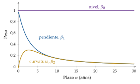
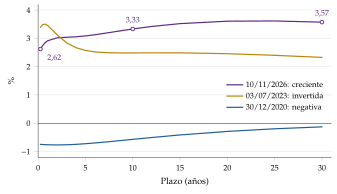
Fuente: BCE, curvas de rendimiento de la zona del euro, deuda de los Estados con calificación AAA. Tipos cupón cero, capitalización continua.
Las curvas de España y de Estados Unidos. El gráfico 8 da las curvas de rentabilidades (TIR de bonos con cupón, no tipos cupón cero) en las mismas 3 situaciones:
España, en septiembre de 2026, de un 2,45 % a 3 meses a un 4,53 % a 30 años: creciente; en julio de 2023, con el tramo corto invertido (la letra a 12 meses al 3,73 % y el bono a 5 años al 3,26 %); y en diciembre de 2020, negativa hasta 5 años (\(-0{,}42\) %), con el bono a 10 años al 0,04 %;
Estados Unidos, el 10 de noviembre de 2026, de un 4,30 % a 3 meses a un 4,98 % a 10 años; el 3 de julio de 2023, invertida (5,44 % a 3 meses y 3,86 % a 10 años); y el 31 de diciembre de 2020, con tipos casi nulos en el tramo corto.
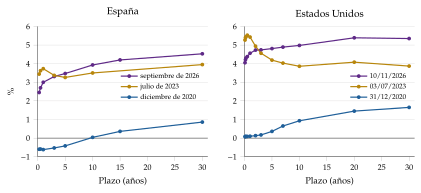
Fuente: España: Banco de España, Boletín Estadístico, cuadros 22.6 y 22.7, medias mensuales del mercado secundario. Estados Unidos: Departamento del Tesoro, rendimientos a la par.
II.2. Teorías explicativas
¿Por qué el tipo a 10 años es distinto del tipo a 1 año? Las teorías responden de 3 formas: por lo que se espera de los tipos futuros, por el riesgo de los plazos largos o por la oferta y la demanda de cada plazo.
Las ordena una sola ecuación, la del tipo largo, con 2 sumandos: los tipos cortos esperados y una prima por plazo. Cada teoría es un supuesto sobre esa prima.
Los hechos que tienen que explicar son 3:
los tipos de todos los plazos se mueven juntos;
cuando los tipos cortos están bajos, la curva suele ser creciente, y cuando están altos, a menudo se invierte;
la curva es creciente casi siempre.
II.2.1. La teoría de las expectativas
a) Idea
La curva refleja lo que el mercado espera de los tipos a corto plazo futuros: si espera que suban, los tipos largos están por encima de los cortos. La idea es de Irving Fisher (1896), y la formularon John R. Hicks (1939)10 y Friedrich A. Lutz (1940).
b) Modelo
i) Supuestos
Los inversores son neutrales al riesgo: solo les importa la rentabilidad esperada.
No hay costes de transacción ni restricciones para pasar de un plazo a otro: los bonos de plazos distintos son sustitutivos perfectos.
ii) Desarrollo
Paso 1, la condición de no arbitraje: si los bonos son sustitutivos perfectos, invertir un euro a \(n\) periodos y encadenar \(n\) inversiones a un periodo tienen que rendir lo mismo en esperanza; si no, todos irían a la mejor.
Con la fecha explícita, el tipo a \(n\) periodos en \(t\) es \(i^{(n)}_t\) (el \(r_n\) de la curva de ese día) y el tipo a un periodo que regirá en \(t+k\), \(i_{t+k}\): \[\tag{5} \big(1+i^{(n)}_t\big)^n=(1+i_t)\,\big(1+\mathbb{E}_t[i_{t+1}]\big)\cdots\big(1+\mathbb{E}_t[i_{t+n-1}]\big).\]
Comparada con (3), dice que cada tipo a plazo es el tipo corto esperado para ese periodo: \(f_{k+1}=\mathbb{E}_t[i_{t+k}]\).
Paso 2, en logaritmos: como \(\ln(1+x)\simeq x\) para tipos pequeños, el tipo largo es la media aritmética de los cortos esperados (el detalle, en el anexo A).
Paso 3, con una prima: si los inversores exigen algo más por quedarse con el plazo largo, se suma una prima por plazo. Es la ecuación del tipo largo, la misma que se usa en la transmisión de la política monetaria [ver tema 3.A.37] [ver tema 3.A.40]:
\[i^{(n)}_t=\frac{1}{n}\sum_{k=0}^{n-1}\mathbb{E}_t[i_{t+k}]+\text{prima por plazo}_t\tag{6}\]
La teoría de las expectativas puras supone que la prima es nula.
iii) Implicaciones
Una curva creciente anuncia subidas de los tipos cortos; una plana, tipos constantes; una invertida, bajadas.
Los tipos a plazo son predictores insesgados de los tipos futuros.
Si el mercado espera que los tipos suban, nadie quiere bonos largos hoy: su precio baja y su rentabilidad sube hasta que rinden lo mismo que la cadena de cortos.
Siguiendo con nuestro bono, el mercado esperaría un tipo a 1 año del 20,22 % dentro de un año, el doble del de hoy (el ejemplo con números redondos, en el anexo D).
c) Extensiones
Las versiones de la teoría (igualar las rentabilidades al vencimiento, las rentabilidades a un periodo o los precios esperados) no son equivalentes cuando hay incertidumbre, por la desigualdad de Jensen: no todas son compatibles con el equilibrio.
La misma pregunta, aplicada a los futuros, es la de la normal backwardation de J. M. Keynes y John R. Hicks: ¿es el precio a plazo un predictor insesgado del precio esperado? [ver tema 3.B.25]. Y en divisas, la de si el tipo de cambio a plazo predice el de contado, cuyo sesgo es la paradoja del forward [ver tema 3.B.13].
d) Evidencia empírica
La pendiente de la curva predice bien los tipos cortos a varios años vista, en la dirección que dice la teoría, pero mal a corto plazo: cuando la curva es muy creciente, el tipo largo tiende a bajar en vez de subir, lo contrario de lo que predice la teoría pura.11
Los tipos a plazo predicen las rentabilidades extraordinarias de los bonos largos: hay una prima por plazo y cambia con el tiempo. Las estimaciones para el bono a 10 años de Estados Unidos la sitúan alta en los 80 y los 90 y negativa en buena parte de 2016-2021, con las compras de los bancos centrales.
e) Valoración
Explica los 2 primeros hechos: que los tipos se muevan juntos, porque una subida del tipo corto hace esperar más subidas, y que la curva sea creciente cuando los tipos cortos están bajos, porque se espera que suban.
Pero no explica el tercero, que la curva sea creciente casi siempre: si fuera por las expectativas, los tipos tendrían que estar subiendo casi siempre. Y el supuesto de neutralidad al riesgo no se cumple. Las 2 cosas llevan a la prima por plazo.
II.2.2. La teoría de la prima por liquidez
a) Idea
Los inversores son aversos al riesgo y un bono largo es más arriesgado que una cadena de cortos, porque su precio cambia más con los tipos (III.2.1). Para mantenerlo exigen una prima, mayor cuanto más largo el plazo.
Se la llama también de la «preferencia por la liquidez», pero no es la de Keynes, que explica la demanda de dinero [ver tema 3.A.35]: aquí la liquidez es la del plazo corto, y su precio, la prima por plazo de (6).
b) Modelo
i) Supuestos
Los inversores son aversos al riesgo y prefieren, en igualdad de rentabilidad esperada, los plazos cortos.
Los bonos de plazos distintos son sustitutivos, pero no perfectos.
ii) Desarrollo
Cada tipo a plazo es el tipo corto esperado más una prima positiva y creciente con el plazo, \(f_{k+1}=\mathbb{E}_t[i_{t+k}]+\text{prima}_{k+1}\), con \(0<\text{prima}_2<\text{prima}_3<\dots\).
En (6), la prima por plazo es positiva y crece con \(n\).
iii) Implicaciones
La curva tiende a ser creciente aunque no se esperen subidas, porque se sitúa por encima de la de las expectativas puras (gráfico 9).
Los tipos a plazo sobrestiman los tipos futuros.
Una curva ligeramente creciente es compatible con tipos cortos constantes, y una plana, con ligeras bajadas que la prima compensa; solo una invertida anuncia bajadas con seguridad.
Siguiendo con nuestro bono, si la prima del segundo año fuera de 1 punto, el tipo esperado para dentro de un año sería el 19,22 % y no el 20,22 %.
c) Extensiones
Para Reuben Kessel (1965), en la llamada teoría de la sustitución del dinero, los bonos cortos rinden menos porque son sustitutos cercanos del dinero, y la prima que exigen los largos sube cuando los tipos son altos: por eso la pendiente cambia con el ciclo.
d) Valoración
Explica los 3 hechos: que los tipos se muevan juntos, que la curva sea más creciente cuando los tipos cortos están bajos y que sea creciente casi siempre.
Pero supone que todos los inversores prefieren lo corto. Un fondo de pensiones, que debe pagar dentro de 30 años, corre más riesgo con una cadena de bonos a 1 año que con uno a 30: para él, lo arriesgado es lo corto. Esa es la puerta a las teorías de los segmentos.
Fuente: elaboración propia a partir de Mishkin y Eakins (2018, cap. 6).
II.2.3. Segmentación del mercado y hábitat preferente
a) Idea
Cada plazo tiene su clientela: los bancos prefieren lo corto, porque sus depósitos lo son, y los fondos de pensiones y las aseguradoras, lo largo, porque sus compromisos lo son. Si la clientela no se mueve de su plazo, cada tipo lo fijan la oferta y la demanda de ese plazo. Es lo que dice el refrán «cada mochuelo a su olivo»: cada inversor se queda en su plazo salvo que le paguen por moverse.
b) Modelo
i) Supuestos
Segmentación (John M. Culbertson, 1957): los bonos de plazos distintos no son sustitutivos en absoluto, por la regulación, por la necesidad de cuadrar los plazos de activos y pasivos o por el coste de informarse sobre otro segmento.
Hábitat preferente (Franco Modigliani y Richard Sutch, 1966):12 cada inversor tiene un plazo preferido, pero lo deja si le pagan una prima suficiente.
ii) Desarrollo
Con la segmentación, cada tipo depende solo de la oferta y la demanda de su segmento, y la curva puede tener cualquier forma.
Con el hábitat preferente, la prima por plazo de (6) puede tener cualquier signo: es positiva en los plazos con poca demanda propia y negativa en los muy demandados.
iii) Implicaciones
Si alguien retira bonos de un plazo, su tipo baja, aunque no cambien las expectativas. Por eso Modigliani y Sutch estudiaron la operación Twist de 1961, con la que la Reserva Federal y el Tesoro quisieron bajar los tipos largos sin tocar los cortos (II.3.4).
c) Extensiones
Dimitri Vayanos y Jean-Luc Vila (2021) lo formalizan: los inversores de hábitat demandan cada plazo, y unos arbitrajistas aversos al riesgo y con capital limitado conectan los plazos entre sí, pero solo a cambio de una prima, porque cargar con bonos largos les expone al riesgo de tipo de interés.
La prima por plazo depende entonces de la oferta neta de bonos de cada plazo que tienen que absorber los arbitrajistas y de su aversión al riesgo.
Si el banco central compra bonos largos, retira riesgo de duración del mercado, la prima baja, más en los plazos que compra, y el tipo largo también: es el canal de reequilibrio de carteras de las compras de activos [ver tema 3.A.37] [ver tema 3.A.40].
d) Evidencia empírica
En el Reino Unido, la reforma de las pensiones de 2004 llevó a los fondos a comprar bonos muy largos, y el tramo de 30 a 50 años de la curva se invirtió.
En Estados Unidos, la Reserva Federal subió el tipo oficial del 1 al 5,25 % entre 2004 y 2006 mientras el tipo a 10 años apenas se movía, y la curva llegó a invertirse en buena parte de 2006 y 2007: el «enigma» de Alan Greenspan (2005), que Ben S. Bernanke (2005) atribuyó a la demanda de bonos largos del resto del mundo, el exceso de ahorro mundial.13
e) Valoración
La segmentación pura explica que la curva sea creciente si hay más demanda de lo corto, pero no que los tipos de todos los plazos se muevan juntos, que es lo más visible en los datos.
El hábitat preferente reúne las 3 teorías en (6): las expectativas son el primer sumando; la prima por liquidez, el caso en que la prima es positiva y creciente; y la segmentación, el caso límite en que la prima necesaria para cambiar de plazo es infinita (tabla 3).
| Hecho | Expectativas | Prima por liquidez | Segmentación | Hábitat preferente |
|---|---|---|---|---|
| 1. Los tipos se mueven juntos | Sí | Sí | No | Sí |
| . Con tipos cortos bajos, curva creciente | Sí | Sí | No | Sí |
| . Curva creciente casi siempre | No | Sí | Sí | Sí |
| Prima por plazo en (6) | Nula | Positiva y creciente | Sin conexión entre plazos | De cualquier signo |
Fuente: elaboración propia a partir de Mishkin y Eakins (2018, cap. 6), que compara las 3 primeras.
II.2.4. Los modelos de equilibrio: Vasicek y Cox, Ingersoll y Ross
a) Idea
En lugar de explicar la curva con las expectativas o con la oferta de cada plazo, se modela cómo se mueve el tipo corto en el tiempo, con incertidumbre, y se deriva de ahí, sin arbitraje, el precio de los bonos de todos los plazos. La curva entera sale de 3 o 4 parámetros con significado económico.
b) Modelo
i) Supuestos
Un solo factor, el tipo instantáneo \(r\), mueve toda la curva, y sigue un proceso estocástico en tiempo continuo.
El tipo vuelve hacia una media a largo plazo (reversión a la media), y no hay arbitraje entre bonos de distintos plazos.
ii) Desarrollo
En el modelo de Oldřich Vasicek (1977), el tipo sigue un proceso de Ornstein y Uhlenbeck: \[\mathrm{d}r=a\,(b-r)\,\mathrm{d}t+\sigma\,\mathrm{d}W ,\] con \(b\) el nivel al que vuelve, \(a\) la velocidad con que vuelve, \(\sigma\) la volatilidad y \(W\) un movimiento browniano (letras locales de este apartado).
En el de John Cox, Jonathan Ingersoll y Stephen Ross (1985), CIR, la volatilidad depende del nivel: \(\mathrm{d}r=a\,(b-r)\,\mathrm{d}t+\sigma\sqrt{r}\,\mathrm{d}W\).
En los 2, el precio de un bono cupón cero que vence dentro de \(\tau\) años tiene la forma \(P(\tau)=A(\tau)\,e^{-B(\tau)\,r}\), con \(B(\tau)=(1-e^{-a\tau})/a\) en el de Vasicek: el tipo de contado de cada plazo es una función lineal del tipo corto de hoy.
iii) Implicaciones
La curva es creciente si el tipo corto está bastante por debajo de su nivel a largo plazo, invertida si está bastante por encima y con joroba en medio.
Un cambio del tipo corto mueve más los tipos cortos que los largos, porque se espera que vuelva a la media: la volatilidad de los tipos baja con el plazo.
En el de Vasicek, los tipos pueden ser negativos; en el CIR, no bajan de cero si la reversión es lo bastante fuerte frente a la volatilidad.
c) Extensiones
Los modelos de Ho y Lee (1986), Hull y White (1990) y Heath, Jarrow y Morton (1992) parten de la curva observada hoy y la reproducen exactamente; sirven sobre todo para valorar derivados de tipos de interés [ver tema 3.B.25].
d) Evidencia empírica
Con un solo factor, todos los tipos se mueven a la vez y en el mismo sentido; en los datos, en cambio, la curva también gira y cambia de curvatura (II.3.2). Hacen falta al menos 3 factores.
e) Valoración
Imponen la ausencia de arbitraje y dan la prima por plazo a partir del precio del riesgo, algo que las teorías clásicas suponen; pero con un factor reproducen mal la curva observada, y por eso en la práctica se usan modelos de varios factores o ajustados a la curva de hoy.
II.3. Formas y movimientos de la curva
II.3.1. Formas
La curva puede tener 4 formas (gráfico 10), y cada teoría las lee de un modo:
Creciente, la normal: con las expectativas, anuncia subidas de los tipos cortos, típicas del final de una recesión; con la prima por liquidez, puede ser solo la prima, sin subidas esperadas.
Plana: con las expectativas puras, tipos cortos constantes; con la prima por liquidez, ligeras bajadas esperadas que la prima compensa, y por eso una curva que se aplana suele anticipar un menor crecimiento. Suele aparecer al final de las expansiones, cuando el tipo oficial ya ha subido.
Invertida: con las expectativas y la prima por liquidez, el mercado espera bajadas de los tipos cortos, normalmente porque espera una recesión (II.3.3); con la segmentación o el hábitat, puede deberse a una gran demanda de bonos largos, como en el Reino Unido tras 2004.
Jorobada (con una joroba en los plazos intermedios): se esperan subidas de los tipos a corto plazo y bajadas después, por ejemplo cuando el banco central sube los tipos para frenar la inflación y el mercado ya descuenta que los bajará; en (4), la recogen \(\beta_2\) y \(\beta_3\).
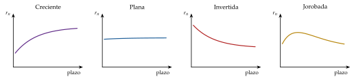
Fuente: elaboración propia a partir de Bodie, Kane y Marcus (2021, cap. 15).
II.3.2. Movimientos
La curva se mueve de 3 formas, que explican la inmensa mayoría de sus cambios (gráfico 11):
el desplazamiento paralelo sube o baja todos los tipos lo mismo; es el más frecuente y el que supone la duración (III.2.2);
el giro (twist) cambia la pendiente: la curva se aplana si el diferencial entre el tipo largo y el corto se estrecha, y se positiviza si se amplía;
la mariposa (butterfly) cambia la curvatura: los plazos intermedios se mueven distinto que los extremos.
Son los 3 factores de (4): nivel (\(\beta_0\)), pendiente (\(\beta_1\)) y curvatura (\(\beta_2\) y \(\beta_3\)).
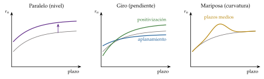
Fuente: elaboración propia a partir de Litterman y Scheinkman (1991).
II.3.3. La curva y el ciclo
La pendiente de la curva, el tipo a 10 años menos el de 3 meses, es uno de los mejores indicadores adelantados del ciclo: en Estados Unidos, las recesiones desde los años 60 han ido precedidas de una curva invertida, y la pendiente predice la actividad y las recesiones a 2-6 trimestres mejor que la mayoría de los indicadores [ver tema 3.A.42].
Por qué: cuando el banco central sube el tipo oficial para frenar una economía recalentada, el tipo corto sube y el mercado anticipa que tendrá que bajarlo cuando llegue la desaceleración, así que, por (6), el largo sube menos o baja: la curva se invierte.14
Las cautelas: si la prima por plazo es muy baja, como con las compras de bonos de los bancos centrales, la curva se aplana sin que se espere una recesión. En Estados Unidos, la curva estuvo invertida, sin interrupción, del 25 de octubre de 2022 al 12 de diciembre de 2024, con un mínimo de \(-1{,}89\) puntos el 1 de junio de 2023, y hasta noviembre de 2026 no se ha fechado ninguna recesión posterior: por ahora, una falsa alarma.
II.3.4. La curva y la política monetaria
El banco central fija el tipo más corto de la curva; el resto lo mueve a través de los 2 sumandos de (6): los tipos cortos esperados, con lo que anuncia, y la prima por plazo, con lo que compra [ver tema 3.A.37].
Cuando el tipo corto ya no puede bajar, actúa sobre el resto de la curva:
con la operación Twist: la Reserva Federal, entre septiembre de 2011 y finales de 2012, cambió letras por bonos largos para aplanar la curva sin ampliar su balance, un giro de manual; repetía la de 1961, que bajó los tipos largos unos 15 puntos básicos;
con las compras de activos, que, según el hábitat preferente, bajan la prima por plazo (II.2.3) [ver tema 3.A.40];
con el control de la curva: el banco central se compromete a mantener el tipo de un plazo en un nivel y compra lo que haga falta. Lo hicieron la Reserva Federal entre 1942 y 1951, hasta el acuerdo con el Tesoro, y el Banco de Japón con el bono a 10 años entre septiembre de 2016 y marzo de 2024 [ver tema 3.A.36]. Si el mercado deja de creer en el objetivo, todos venden a la vez y el banco central tiene que comprar sin límite o abandonarlo de golpe.
Recapitulación: la curva resume las expectativas sobre los tipos futuros más una prima por plazo. Pero el inversor que tiene un bono no solo quiere saber qué espera el mercado: quiere saber cuánto pierde si los tipos se mueven.
III. Valoración del riesgo y del rendimiento: duración y convexidad
Conclusión anticipada: los pagos de un bono son fijos, pero su valor no. El riesgo principal es el de tipo de interés: la duración mide cuánto pierde un bono si suben los tipos, la convexidad corrige el error de esa medida y, con las 2, se puede inmunizar una cartera.
Nexo: tras la curva, pasamos al riesgo: qué riesgos tiene un bono y cómo se miden y se gestionan los de tipo de interés.
III.1. Riesgos de la inversión en bonos
Un bono está expuesto a 8 riesgos:
de tipo de interés (o de mercado): si los tipos suben, el precio baja. No afecta a quien mantiene el bono hasta el vencimiento, salvo por el riesgo siguiente;
de reinversión: si los tipos bajan, los cupones se reinvierten a tipos más bajos. Va en sentido contrario al anterior, y esa es la base de la inmunización (III.2.5); en un bono a tipo variable, el riesgo es de renta y no de precio, porque en cada revisión vale casi su nominal;
de crédito: que el emisor no pague, o que empeore su calificación y el precio baje (I.3.1);
de liquidez: no poder vender el bono rápido sin rebajar el precio; se mide por la horquilla entre los precios de compra y de venta;
de amortización anticipada: que el emisor amortice un callable cuando los tipos bajan, justo cuando reinvertir rinde menos;
de inflación: que la inflación reduzca el poder de compra de los pagos; lo evitan los bonos indexados;
de tipo de cambio: que se deprecie la moneda en que paga el bono;
de sucesos y legal: que una catástrofe, una fusión, una reestructuración o un cambio de ley cambie el valor del bono.
Todos se traducen en una rentabilidad exigida mayor. Por eso, para valorar el riesgo, hay que saber cuánto cambia el precio cuando cambia la rentabilidad: es lo que miden la duración y la convexidad.
III.2. Riesgo de tipo de interés
III.2.1. Caracterización: las proposiciones de Malkiel
Cómo cambia el precio de un bono con los tipos lo resumen 6 proposiciones, las 5 primeras de Burton Malkiel (1962) y la última de Sidney Homer y Martin Leibowitz (1972) (gráfico 12):
el precio y la rentabilidad se mueven en sentido contrario;
una subida de la rentabilidad baja el precio menos de lo que lo sube una bajada igual: la relación es convexa;
cuanto más largo el plazo, más sensible es el precio a la rentabilidad;
esa sensibilidad crece con el plazo, pero cada vez menos;
cuanto más alto el cupón, menos sensible es el precio, porque más valor se cobra pronto;
cuanto más alta la rentabilidad de partida, menos sensible es el precio, porque los pagos lejanos pesan menos.
Por tanto, el riesgo de tipo de interés depende del plazo (proposiciones 3 y 4), del cupón (5) y de la rentabilidad (6). Las letras del Tesoro, a muy corto plazo, están casi libres de él. La duración reúne los 3 determinantes en una sola cifra.
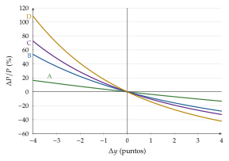
Fuente: elaboración propia a partir de Bodie, Kane y Marcus (2021, cap. 16). Bonos A (cupón del 12 %, 5 años, TIR inicial del 10 %), B (12 %, 30 años, 10 %), C (3 %, 30 años, 10 %) y D (3 %, 30 años, 6 %). A y B solo difieren en el plazo; B y C, en el cupón; C y D, en la rentabilidad de partida.
III.2.2. Duración de Macaulay
Idea: el plazo no basta para medir el riesgo, porque un bono con cupones cobra parte de su valor antes del vencimiento. Frederick Macaulay (1938) propuso medir el plazo medio de los pagos.
Definición: la duración de un bono es la media de los plazos de sus pagos, ponderada por la parte del precio que representa cada uno: \[\tag{7} D=\sum_{t=1}^{T}t\,w_t,\qquad w_t=\frac{\mathrm{FC}_t/(1+y)^t}{P} .\] Los pesos suman 1, porque los flujos descontados a la TIR suman el precio (2); el último incluye el nominal.
Interpretación analítica: con la curva plana (\(r_t=y\) en todos los plazos), derivar (2) da \[D=-\frac{\mathrm{d}P}{\mathrm{d}(1+y)}\,\frac{1+y}{P} ,\] la elasticidad del precio respecto a \(1+y\): si \(1+y\) sube un 1 %, el precio baja aproximadamente un \(D\) % (anexo A). Hicks (1939) llegó por su cuenta a la misma medida. No es un plazo de recuperación de la inversión, sino un plazo medio ponderado por el valor.
Interpretación gráfica: es el punto de apoyo que equilibra una balanza en la que cada pago, descontado, es un peso colocado en su fecha (gráfico 13).
Propiedades:
la duración de un bono cupón cero es su plazo; la de un bono con cupones, menor;
es menor cuanto más alto el cupón y cuanto más alta la TIR, y casi siempre mayor cuanto más largo el plazo;15
baja con el paso del tiempo y salta hacia arriba con cada cupón cobrado;
la de una cartera es la media de las de sus bonos, ponderada por su valor.
Siguiendo con nuestro bono, con una TIR del 14,75 %, el cupón del primer año pesa \(87{,}1/922{,}6=9{,}4\) % del precio y el pago final, el 90,6 %: \(D=1\times0{,}094+2\times0{,}906=1{,}91\) años, muy cerca de su plazo de 2 años.
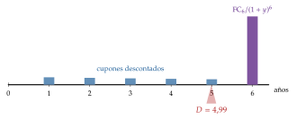
Fuente: elaboración propia a partir de Rodríguez Graña (2014). Bono a 6 años con un cupón del 8 % y una TIR del 8 %: \(D=4{,}99\) años.
III.2.3. Duración modificada y duración monetaria
Idea: al inversor no le interesa un plazo en años, sino cuánto cambia el precio de su bono si cambia la rentabilidad.
Definición: la duración modificada es la duración entre \(1+y\) y mide la semielasticidad del precio respecto a la TIR: \[D^{\mathrm{mod}}=\frac{D}{1+y}=-\frac{1}{P}\,\frac{\mathrm{d}P}{\mathrm{d}y} \quad\Longrightarrow\quad \frac{\Delta P}{P}\simeq-D^{\mathrm{mod}}\,\Delta y .\] Si la TIR sube 1 punto, el precio baja aproximadamente un \(D^{\mathrm{mod}}\) %.
En euros: la duración monetaria, \(D^{\mathrm{mon}}=P\,D^{\mathrm{mod}}\), da el cambio del precio en euros, \(\Delta P\simeq-D^{\mathrm{mon}}\,\Delta y\); su versión para 1 punto básico es el valor del punto básico (DV01), \(P\,D^{\mathrm{mod}}\times0{,}0001\), que usan los operadores para sumar el riesgo de bonos distintos.
Interpretación gráfica: \(-P\,D^{\mathrm{mod}}\) es la pendiente de la tangente a la curva precio-rentabilidad en el punto de partida (gráfico 4).
Siguiendo con nuestro bono, \(D^{\mathrm{mod}}=1{,}91/1{,}1475=1{,}66\):
si la TIR sube del 14,75 al 15,75 %, el precio debería bajar un 1,66 %, unos 15,3 €; de verdad baja un 1,64 %;
con una subida de 3 puntos, la duración predice un \(-4{,}98\) % y el precio baja un \(-4{,}80\) %: el error crece con el tamaño del cambio, porque la tangente es una recta y la curva no.
Limitaciones: es una aproximación lineal, buena solo para cambios pequeños; supone que la curva es plana y se desplaza en paralelo (otros movimientos exigen duraciones por tramos de la curva); y solo mide el riesgo de tipo de interés.
III.2.4. Convexidad
Idea: la duración modificada aproxima la curva precio-rentabilidad con una recta; la convexidad mide cuánto se curva y corrige el error de esa recta.
Definición: es la segunda derivada del precio respecto a la TIR, en proporción al precio: \[\mathrm{Conv}=\frac{1}{P}\,\frac{\mathrm{d}^2P}{\mathrm{d}y^2}=\frac{1}{P\,(1+y)^2}\sum_{t=1}^{T}t\,(t+1)\,\frac{\mathrm{FC}_t}{(1+y)^t} .\]
La aproximación de segundo orden, con un desarrollo de Taylor (anexo A):
\[\frac{\Delta P}{P}\simeq-D^{\mathrm{mod}}\,\Delta y+\frac{1}{2}\,\mathrm{Conv}\,(\Delta y)^2\tag{8}\]
Interpretación: en un bono sin opciones la convexidad es positiva, así que el segundo término suma siempre: la duración sola exagera las caídas del precio cuando la TIR sube y se queda corta en las subidas cuando la TIR baja (gráfico 4).
Siguiendo con nuestro bono, la convexidad es 4,27: con una subida de 3 puntos, la aproximación pasa de \(-4{,}98\) % a \(-4{,}98+\tfrac12\times4{,}27\times0{,}03^2\times100=-4{,}79\) %, frente al \(-4{,}80\) % exacto.
Determinantes: la convexidad es mayor cuanto más largo el plazo, cuanto más baja la TIR y, con el plazo dado, cuanto más bajo el cupón; con la duración dada, es mayor cuanto más dispersos están los pagos.
Por qué se valora: entre 2 bonos con la misma duración y la misma TIR, el más convexo gana más si los tipos bajan y pierde menos si suben (gráfico 14). Por eso el inversor la quiere alta y la paga, y más cuanto más volátiles espera los tipos.
Bonos con opciones: si el bono lleva una opción, sus flujos dependen de los tipos y la fórmula de Macaulay no sirve. Se usa la duración efectiva: se valora el bono, con un modelo que incluye la opción, con la TIR un poco más alta y un poco más baja, \(P_+\) y \(P_-\), y se mide la pendiente, \(D^{\mathrm{ef}}=(P_--P_+)/(2P\,\Delta y)\). En el callable, cuando los tipos bajan hacia el nivel en que se amortizará, el precio deja de subir: la convexidad se vuelve negativa, y el inversor pierde con las subidas de tipos casi tanto como con un bono ordinario, pero gana menos con las bajadas (gráfico 5). Es la otra cara del cupón más alto que cobra; lo mismo pasa con los bonos hipotecarios, que se amortizan antes cuando los tipos bajan y las familias refinancian.
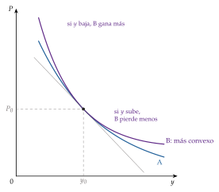
Fuente: elaboración propia a partir de Bodie, Kane y Marcus (2021, cap. 16).
III.2.5. Gestión del riesgo de tipo de interés
Medido el riesgo, queda gestionarlo. Hay 2 actitudes: protegerse de él (gestión pasiva, con la inmunización como herramienta central) o apostar con él (gestión activa).
La inmunización
a) Idea
El riesgo de precio y el de reinversión van en sentidos contrarios: si los tipos suben, el bono vale menos, pero los cupones se reinvierten a más. Hay un horizonte en que los 2 efectos se compensan, y es la duración. Quien tiene que pagar algo dentro de \(H\) años y compra un bono, o una cartera, de duración \(D=H\) está protegido frente a un cambio de los tipos: es la inmunización (Frank Redington, 1952; Lawrence Fisher y Roman Weil, 1971). Es el lado del rendimiento de la duración.
b) Modelo
i) Supuestos:
la curva es plana y, si cambia, lo hace con un desplazamiento paralelo, una sola vez, justo después de comprar;
el inversor tiene un compromiso conocido a \(H\) años (una pensión, un seguro).
ii) Desarrollo:
Paso 1: lo que valdrá la inversión en \(H\), con los cupones reinvertidos a \(y\), es lo que vale hoy capitalizado: \(V_H=P(y)\,(1+y)^H\).
Paso 2: al derivar respecto a \(y\) aparecen los 2 efectos, el de precio, \(P'(y)\,(1+y)^H<0\), y el de reinversión, \(H\,P\,(1+y)^{H-1}>0\).
Paso 3: con la definición de la duración, \(P'(y)=-D\,P/(1+y)\), y queda \[\frac{\mathrm{d}V_H}{\mathrm{d}y}=(1+y)^{H-1}\,P\,\big(H-D\big) .\]
Paso 4: si \(H=D\), el valor final no cambia con los tipos; y como la duración baja cuando sube la TIR, \(V_H\) tiene ahí un mínimo: cualquier cambio de los tipos lo sube (gráfico 15).
iii) Implicaciones:
inmunizar no es comprar el bono del plazo del compromiso, sino uno, o una cartera, con su duración;
para un balance con activos y pasivos, las 3 condiciones de Redington son que el valor actual de los activos iguale el de los pasivos, que sus duraciones coincidan y que la convexidad de los activos sea mayor que la de los pasivos;
siguiendo con nuestro bono, de duración 1,91 años, inmuniza un pago comprometido dentro de 1,91 años, no dentro de 2.
c) Extensiones
El casamiento de flujos (cash-flow matching o dedication) compra bonos cuyos pagos coinciden exactamente con los compromisos, fecha a fecha. Elimina todo riesgo de tipo de interés y no exige reajustes, pero es caro y a menudo imposible: no hay bonos para todas las fechas y cantidades.
La inmunización contingente deja gestionar la cartera libremente mientras su valor supere con margen el que asegura el compromiso, y la inmuniza si cae por debajo.
La gestión de activos y pasivos de un banco: un banco financia préstamos e hipotecas largas con depósitos cortos. Con las duraciones modificadas del activo y del pasivo, \(D^{\mathrm{mod}}_{\mathrm A}\) y \(D^{\mathrm{mod}}_{\mathrm P}\), y una curva plana que se desplaza en \(\Delta y\), el valor económico de su capital, \(V_E=V-V_D\), cambia en \[\tag{9} \Delta V_E\simeq-\Big[D^{\mathrm{mod}}_{\mathrm A}-\frac{V_D}{V}\,D^{\mathrm{mod}}_{\mathrm P}\Big]\,V\,\Delta y ,\] y el corchete es la brecha de duración: inmunizarse es dejarla en cero. Fue el problema de Silicon Valley Bank en 2023 [ver tema 3.B.26] [ver tema 4.A.19].
Con derivados: en lugar de vender bonos, se cambia la duración con permutas de tipos de interés (pagar fijo la acorta, recibir fijo la alarga) o con futuros sobre bonos [ver tema 3.B.25].
d) Valoración
La inmunización es una protección local: la duración cambia con los tipos y con el tiempo (más despacio que el horizonte), así que la cartera hay que reajustarla, y falla si la curva gira en lugar de desplazarse en paralelo.
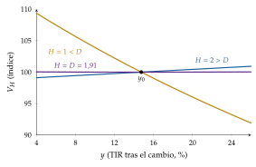
Fuente: elaboración propia a partir de L. Fisher y Weil (1971), con el bono del ejemplo (nominal 1.000 €, cupón del 10 %, 2 años, TIR del 14,75 %).
Gestión pasiva y gestión activa
La gestión pasiva acepta los precios de mercado y busca controlar el riesgo: replicar un índice de bonos, con una muestra que reproduzca su duración, su plazo y su calidad, porque comprarlos todos es caro, o inmunizar un compromiso. Tiene sentido si el mercado es eficiente [ver tema 3.B.23].
La gestión activa apuesta a que el gestor sabe algo que el mercado no ha descontado:
sobre los tipos: alargar la duración de la cartera si se espera que bajen y acortarla si se espera que suban;
sobre la curva: concentrar la cartera en un plazo (bullet) o en los 2 extremos (barbell) según se espere que se aplane o se positivice; o montar la curva (riding the yield curve): comprar un bono algo más largo que el horizonte para venderlo antes de que venza, con la ganancia que da la caída de su tipo si la curva creciente no cambia;
sobre los diferenciales: cambiar un bono por otro casi igual que cotiza más barato, o por otro de otro emisor o sector cuyo diferencial se espera que se estreche.
El análisis de horizonte une las 2: se fija un plazo, se supone una curva para entonces y se calcula la rentabilidad realizada de cada bono (I.5).
Recapitulación: la duración mide el riesgo de tipo de interés, la convexidad lo afina y la inmunización lo neutraliza igualando la duración con el horizonte.
Conclusión
Recapitulación:
En conclusión, un bono vale lo que valen sus pagos descontados con los tipos de cada plazo, y su TIR es la rentabilidad que da si se cumplen 3 supuestos que rara vez se cumplen a la vez; por eso precio y rentabilidad se mueven en sentido contrario.
La curva de tipos resume las expectativas sobre los tipos cortos futuros más una prima por plazo, que cambia con el riesgo y con quién compra cada plazo.
El riesgo de un bono es, sobre todo, de tipo de interés: la duración lo mide, la convexidad corrige el error de esa medida y la inmunización lo neutraliza.
Relevancia:
Estas herramientas no son solo de los gestores: con ellas calcula el Tesoro el coste y el riesgo de su deuda [ver tema 4.B.26], vigila el supervisor la brecha de duración de los bancos y decide el banco central cuántos bonos comprar.
Extensiones:
Los derivados de tipos de interés, que se valoran con la curva y permiten cambiar la duración sin vender bonos [ver tema 3.B.25].
El riesgo de tipo de interés de los bancos y las crisis [ver tema 3.B.26], y su regulación [ver tema 3.B.27].
La transmisión de la política monetaria a lo largo de la curva y las compras de activos [ver tema 3.A.37] [ver tema 3.A.40]; la deuda pública y su sostenibilidad [ver tema 3.A.39]; y el mercado español de renta fija [ver tema 4.A.20].
Opinión:
En 15 años, la renta fija europea ha vivido los 2 extremos. En julio de 2012, la prima de riesgo española llegó a 555 puntos básicos de media, con la ruptura del euro como un riesgo de suceso que ninguna duración mide. En diciembre de 2020, la deuda del Estado rendía en negativo hasta 5 años, con un BCE que compraba deuda y una prima por plazo bajo cero. Y en 2022 y 2023, la subida de los tipos dio a los bonos largos sus peores años en décadas.
La lección es la del enganche: la renta fija es fija en sus pagos, no en su valor; quien la compra asume un riesgo de tipo de interés que se mide con la duración, y quien lo olvida lo descubre de golpe, como Silicon Valley Bank.
Idea final:
«¡Cuán largo me lo fiáis!»: en la renta fija, el largo plazo se paga 2 veces, con la prima por plazo en el precio y con la duración en el riesgo. Medir las 2 es lo que permite que el ahorro de hoy financie, a 30, 50 o 100 años, la inversión de mañana.
A. Anexo: derivaciones
A.1. La duración y la convexidad
Supuesto: curva plana; todos los flujos se descuentan a la TIR, \(P=\sum_{t=1}^{T}\mathrm{FC}_t\,(1+y)^{-t}\), con \(\mathrm{FC}_T=C_T+\mathrm{VN}\).
Paso 1, la primera derivada: como \(\mathrm{d}(1+y)^{-t}/\mathrm{d}y=-t\,(1+y)^{-t-1}\), \[\frac{\mathrm{d}P}{\mathrm{d}y}=-\sum_{t=1}^{T}t\,\frac{\mathrm{FC}_t}{(1+y)^{t+1}}=-\frac{1}{1+y}\sum_{t=1}^{T}t\,\frac{\mathrm{FC}_t}{(1+y)^{t}} .\]
Paso 2, la duración de Macaulay: multiplicando por \(-(1+y)/P\), y como \(\mathrm{d}(1+y)=\mathrm{d}y\), \[D\equiv-\frac{\mathrm{d}P}{\mathrm{d}(1+y)}\,\frac{1+y}{P}=\sum_{t=1}^{T}t\,\frac{\mathrm{FC}_t/(1+y)^t}{P}=\sum_{t=1}^{T}t\,w_t , \qquad\sum_{t=1}^{T}w_t=1 .\]
Paso 3, la duración modificada: \(D^{\mathrm{mod}}\equiv-\dfrac{1}{P}\dfrac{\mathrm{d}P}{\mathrm{d}y}=\dfrac{D}{1+y}\).
Paso 4, la segunda derivada: como \(\mathrm{d}^2(1+y)^{-t}/\mathrm{d}y^2=t\,(t+1)\,(1+y)^{-t-2}\), \[\frac{\mathrm{d}^2P}{\mathrm{d}y^2}=\sum_{t=1}^{T}t\,(t+1)\,\frac{\mathrm{FC}_t}{(1+y)^{t+2}} \quad\Longrightarrow\quad \mathrm{Conv}\equiv\frac{1}{P}\frac{\mathrm{d}^2P}{\mathrm{d}y^2}=\frac{1}{P\,(1+y)^2}\sum_{t=1}^{T}t\,(t+1)\,\frac{\mathrm{FC}_t}{(1+y)^{t}}>0 .\]
Paso 5, la aproximación de Taylor: \(P(y+\Delta y)\simeq P(y)+\dfrac{\mathrm{d}P}{\mathrm{d}y}\Delta y+\dfrac12\dfrac{\mathrm{d}^2P}{\mathrm{d}y^2}(\Delta y)^2\); dividiendo por \(P\), sale (8).
Si la curva no es plana, la derivada respecto a «la» rentabilidad no está definida: hay que decir qué se mueve. Con un desplazamiento paralelo de todos los tipos de contado, \(r_t+\Delta\), sale la duración de Fisher y Weil, la misma fórmula con cada flujo descontado a su \(r_t\).∎
A.2. La teoría de las expectativas en logaritmos
Paso 1: se toman logaritmos en (5): \(n\ln\big(1+i^{(n)}_t\big)=\ln(1+i_t)+\sum_{k=1}^{n-1}\ln\big(1+\mathbb{E}_t[i_{t+k}]\big)\).
Paso 2: con \(\ln(1+x)\simeq x\) para tipos pequeños, \(n\,i^{(n)}_t\simeq\sum_{k=0}^{n-1}\mathbb{E}_t[i_{t+k}]\), y dividiendo por \(n\), \(i^{(n)}_t\simeq\frac1n\sum_{k=0}^{n-1}\mathbb{E}_t[i_{t+k}]\): es (6) con la prima nula.
Paso 3: si los inversores exigen un rendimiento extra por el plazo largo, se suma a la derecha y aparece la prima por plazo. En sentido estricto, la aproximación ignora también la diferencia entre \(\ln\mathbb{E}[\cdot]\) y \(\mathbb{E}[\ln\cdot]\) (desigualdad de Jensen), que queda dentro de la prima.∎
B. Anexo: clasificaciones de los bonos
B.1. Según la naturaleza del emisor
Cualquier agente puede emitir renta fija si encuentra quien la compre y cumple los requisitos legales: en una emisión pública, normalmente, registrar el folleto ante el supervisor de valores (la CNMV en España); la Ley de Sociedades de Capital añade requisitos para las emisiones de las empresas.
Renta fija pública:
Instituciones financieras internacionales (supranacionales: Banco Mundial, BEI, BERD): emisores muy activos y de máxima calidad crediticia, porque cuentan con el respaldo, explícito o implícito, de sus Estados miembros.
Estados soberanos: dependen de la capacidad del Estado para recaudar, emitir moneda o, si se endeuda en divisa, acumular reservas. Por su uso en la política monetaria, por la demanda regulatoria y por el poder fiscal que tienen detrás, son la referencia del riesgo de cada país y, en las economías más sólidas, el activo libre de riesgo por excelencia.
Administraciones territoriales y agencias (ayuntamientos, comunidades autónomas, Instituto de Crédito Oficial): pagan con su recaudación, con los flujos del proyecto que financian o con el apoyo de otra administración; su calidad depende de la garantía del soberano, explícita (avales) o implícita.
Renta fija privada:
Empresas: pagan con los flujos de su actividad. Destacan las entidades financieras, que acuden de forma recurrente a los mercados para cubrir la diferencia entre préstamos y depósitos y para gestionar su tesorería.
Vehículos de titulización: transforman derechos de cobro (hipotecas, tarjetas, créditos al consumo) en bonos de distinta calidad, cupón y vencimiento según su lugar en la cascada de pagos (tranching) [ver tema 3.B.26].
En España, a final de 2025, el mercado AIAF tenía 1,56 billones de euros de deuda pública y 366.625 millones de renta fija privada, y el MARF, el mercado alternativo para empresas medianas, superaba los 10.000 millones [ver tema 4.A.20].
B.2. Según el mercado y el procedimiento de emisión
Mercado primario y secundario: en el primario se venden los títulos nuevos, con los que el emisor capta financiación; en el secundario se revenden. El secundario importa por 2 razones: da liquidez a los títulos, sin la cual pocos los comprarían en la emisión, y sus cotizaciones informan sobre cómo valora el mercado al emisor, lo que fija las condiciones de sus emisiones futuras.
Procedimientos de emisión:
Subasta: la habitual en la deuda pública. El Tesoro publica un calendario y los inversores presentan peticiones competitivas (con importe y precio, en porcentaje del nominal; en las letras, en tipo de interés) o no competitivas (solo importe). Se ordenan de mayor a menor precio hasta cubrir el importe, lo que fija el precio mínimo. Las peticiones entre el precio mínimo y el precio medio ponderado pagan lo que ofrecieron, y las que lo superan y las no competitivas, el precio medio ponderado: es la subasta «convencional corregida» [ver tema 3.A.14] [ver tema 4.B.26].
Sindicación: un grupo de entidades coloca la emisión, asegurándola a un precio (underwriting) o colocándola al mejor precio posible (best effort).
Colocación privada: emisiones a medida para pocos inversores.
B.3. Según la divisa y el lugar de emisión
La mayoría de los bonos internacionales se emiten en dólares o en euros, porque los inversores prefieren monedas líquidas y libres. El dólar domina por las necesidades del Tesoro de Estados Unidos y de sus agencias hipotecarias, y porque muchos emergentes emiten en dólares para atraer a los inversores, que así no corren el riesgo de depreciación de la moneda local.
Los bonos de doble divisa pagan los intereses en una moneda y el principal en otra, y los bonos con opción de divisa combinan un bono en moneda local con una opción sobre una divisa.
Por la moneda y el lugar: el mercado doméstico (residentes y moneda nacional); el segmento internacional del mercado doméstico (emisores extranjeros, moneda y regulación del país, inversores sobre todo nacionales); y los euromercados, con eurobonos, bonos emitidos en una moneda distinta de la del país donde se colocan, por cualquier emisor, para inversores internacionales y con la ley pactada en el contrato, normalmente la inglesa [ver tema 3.B.3].
B.4. Según el cupón
Cupón fijo (plain vanilla): los más habituales. Si se mantienen hasta el vencimiento dan una rentabilidad conocida, salvo impago, y su sensibilidad a los tipos, la duración y la convexidad, es fácil de calcular.
Cupón variable: un tipo de referencia (Euríbor) más un diferencial, tanto menor cuanto mejor es la calidad del emisor; o un cupón que crece a una tasa fijada o se ajusta a la inflación.
Cupón cero: no pagan cupones y se emiten al descuento; el interés es la diferencia entre el nominal y el precio. Los títulos del mercado monetario son, en el fondo, bonos cupón cero.
Bonos devengables (accrual): devengan cupones que se pagan al vencimiento, con el nominal.
Bonos con cupones diferidos: devengan cupones, pero el primer pago, con los acumulados, se retrasa hasta una fecha fijada.
C. Anexo: bonos verdes, sociales y vinculados a la sostenibilidad
Los bonos verdes son bonos ordinarios cuyo dinero se dedica a proyectos con beneficios ambientales: energías renovables, eficiencia energética, transporte limpio, agua, prevención de la contaminación o adaptación al cambio climático. El emisor responde con todo su balance, así que tienen la misma calificación que el resto de su deuda; lo distinto es el compromiso sobre el uso de los fondos y la obligación de informar de él, según los Principios de Bonos Verdes de la Asociación Internacional de Mercados de Capitales. Los bonos sociales hacen lo mismo con proyectos sociales, y los azules, con proyectos marinos y del agua.
Los bonos vinculados a la sostenibilidad no financian un proyecto concreto: su cupón cambia si el emisor no cumple unos objetivos de sostenibilidad fijados de antemano, por ejemplo de reducción de emisiones. Los bonos de transición financian a emisores de sectores contaminantes que se comprometen a reducir sus emisiones.
El mercado: los bonos verdes eran el 4,3 % de las emisiones mundiales de deuda en enero-septiembre de 2025, una parte todavía pequeña del mercado de renta fija.
Los emisores públicos:
Alemania emitió su primer bono verde el 2 de septiembre de 2020, 6.500 millones a 10 años, y España, el 7 de septiembre de 2021, 5.000 millones a 20 años con un cupón del 1 %; a final de 2025, el Tesoro tenía 18.384 millones en bonos verdes [ver tema 4.B.26].
La Comisión Europea puede financiar hasta el 30 % de NextGenerationEU con bonos verdes: en noviembre de 2026 tenía en circulación 86.240 millones, una décima parte de su deuda [ver tema 3.B.37].
Desde el 21 de diciembre de 2024 se aplica el estándar europeo de bonos verdes, voluntario y ligado a la taxonomía de la Unión [ver tema 3.B.31].
¿Funcionan?: un bono verde no garantiza que el emisor sea verde: puede ser una empresa muy contaminante que financia un proyecto limpio. Los primeros estudios no encontraron que las empresas que los emitían redujeran sus emisiones; con más datos, las emisiones sí caen tras el primer bono verde, sobre todo en los sectores más contaminantes. Los fondos de inversión sostenible defienden que la rentabilidad es compatible con esos criterios.
D. Anexo: ejemplos resueltos
D.1. El precio por arbitraje
Enunciado: un bono cupón cero a 1 año de nominal 100 € cuesta 90,9 €, y un bono a 2 años de nominal 1.000 € y cupón anual del 10 % cuesta 922,6 €. ¿Cuánto vale un bono cupón cero a 2 años de nominal 1.100 €?
Paso 1: el bono a 2 años paga 100 € en un año y 1.100 € en 2; su primer pago vale lo que el cupón cero a 1 año, 90,9 €.
Paso 2: por arbitraje, el resto del precio es el valor del segundo pago: \(922{,}6-90{,}9=831{,}7\) €. Si el cupón cero a 2 años costara otra cosa, se ganaría sin riesgo comprando lo barato y vendiendo lo caro.∎
D.2. La teoría de las expectativas con números redondos
Enunciado: un inversor con 100 € y 2 años puede comprar un bono a 2 años al 10 % (\(i^{(2)}_t=10\) %), que le da \(100\times1{,}1^2=121\) €, o un bono a 1 año al 8 % (\(i_t=8\) %) y reinvertir al tipo que haya dentro de un año (figura 2).
Lo que obtiene con la segunda estrategia depende del tipo esperado para el segundo año, \(\mathbb{E}_t[i_{t+1}]\):
si espera un 20 %, \(100\times1{,}08\times1{,}20=129{,}60\) €: todos venden bonos a 2 años, su precio baja y su tipo sube;
si espera un 11 %, \(100\times1{,}08\times1{,}11=119{,}88\) €: todos compran bonos a 2 años, su precio sube y su tipo baja;
solo si espera un 12,04 %, \(100\times1{,}08\times1{,}1204=121\) €, le da igual: es el equilibrio.
En equilibrio, \((1+i^{(2)}_t)^2=(1+i_t)\,(1+\mathbb{E}_t[i_{t+1}])\) y, despreciando el producto de los tipos, \(i^{(2)}_t\simeq\frac12\big(i_t+\mathbb{E}_t[i_{t+1}]\big)\): 10 % \(\simeq\frac12(8+12)\) %. Es (6) con \(n=2\) y sin prima.∎
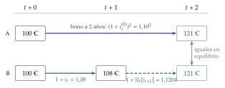
Fuente: elaboración propia.
D.3. La duración y la convexidad del bono del ejemplo
Datos: bono a 2 años, nominal 1.000 €, cupón del 10 %, precio 922,6 €; su TIR, la \(y\) que cumple \(922{,}6=100/(1+y)+1.100/(1+y)^2\), es del 14,75 %.
Duración: pesos \(w_1=87{,}1/922{,}6=0{,}094\) y \(w_2=835{,}5/922{,}6=0{,}906\); \(D=1{,}91\) años; \(D^{\mathrm{mod}}=1{,}91/1{,}1475=1{,}66\); DV01 \(=922{,}6\times1{,}66\times0{,}0001=0{,}15\) €.
Convexidad: \(\mathrm{Conv}=\big[1\cdot2\cdot87{,}1+2\cdot3\cdot835{,}5\big]/\big[922{,}6\cdot1{,}1475^2\big]=4{,}27\).
Comparación (variación del precio, en %):
| \(\Delta y\) | Exacto | Duración | Duración y convexidad |
|---|---|---|---|
| \(+1\) punto | \(-1{,}64\) | \(-1{,}66\) | \(-1{,}64\) |
| \(-1\) punto | \(+1{,}68\) | \(+1{,}66\) | \(+1{,}68\) |
| \(+3\) puntos | \(-4{,}80\) | \(-4{,}98\) | \(-4{,}79\) |
| \(-3\) puntos | \(+5{,}18\) | \(+4{,}98\) | \(+5{,}17\) |
Fuente: elaboración propia.
E. Anexo: para el test
Preguntas tipo test del primer ejercicio: simulador de test.
Bibliografía
Se distinguen 2 tipos de activos. Los activos reales (tierra, edificios, máquinas, conocimiento) determinan la capacidad productiva de una economía y no son el pasivo de nadie. Los activos financieros son derechos sobre los activos reales o sobre las rentas que generan: no contribuyen directamente a la capacidad productiva, y un activo financiero de un agente es siempre, a la vez, el pasivo (o el patrimonio neto) de otro, el emisor.↩︎
Es un pagaré que el prestatario entrega al prestamista a cambio de su dinero, con un contrato de préstamo detrás. Para el emisor, es una forma de financiarse que compite con el préstamo bancario y con las acciones, según su estructura óptima de capital [ver tema 3.B.3]; para el inversor, una forma de obtener rentabilidad sin la incertidumbre de la renta variable.↩︎
La deuda perpetua no se devuelve nunca: el emisor solo paga intereses, aunque suele reservarse el derecho a amortizarla cuando quiera. En 2020, Luis Garicano propuso financiar un fondo europeo de reconstrucción de 1 billón de euros con deuda perpetua (EU Consols); la Unión prefirió emitir deuda a plazo para NextGenerationEU [ver tema 3.B.37]. El bono perpetuo más antiguo que sigue pagando intereses es uno de 1648 de una autoridad del agua neerlandesa.↩︎
Se llama así porque los títulos en papel llevaban unos cupones que el tenedor cortaba y presentaba al cobro. El cupón es anual en la deuda del Estado español y semestral en la de Estados Unidos y en muchos bonos de empresa.↩︎
Los tipos de referencia más usados en euros son el Euríbor, al que los bancos de la zona del euro obtienen financiación sin garantía a 1 semana y a 1, 3, 6 y 12 meses, calculado desde noviembre de 2019 con una metodología híbrida que usa operaciones reales siempre que las hay, y el €STR, que publica el BCE desde el 2 de octubre de 2019 con las operaciones a un día sin garantía del día hábil anterior. El €STR sustituyó al EONIA, que desde esa fecha se calculó como el €STR más 8,5 puntos básicos hasta que dejó de publicarse el 3 de enero de 2022. En dólares, el LÍBOR dejó de publicarse con un panel de bancos el 30 de junio de 2023, y lo sustituyó el SOFR.↩︎
En España se hablaba tradicionalmente de 18 meses, el plazo máximo habitual de los pagarés de empresa; las estadísticas europeas llaman de corto plazo a los valores con un vencimiento original de hasta un año.↩︎
Con \(m\) cupones al año y tipos anuales, cada flujo se descuenta \(mt\) periodos a \(r_t/m\), con el cupón \(C/m\) por periodo.↩︎
En sentido estricto, la ETTI es la curva cupón cero o curva pura: la de los strips y bonos cupón cero. La prensa suele dibujar la curva de rentabilidades de los bonos con cupón, la TIR de cada plazo, que no es lo mismo, porque cada TIR es un promedio de varios tipos de contado; la de los bonos recién emitidos, que cotizan cerca de la par, es la curva par u on the run.↩︎
La segregación transforma un activo de rendimiento explícito en varios de rendimiento implícito, atractivos para inversores que quieren cobrar en una fecha concreta, sin que el Tesoro tenga que emitir más clases de valores. Para los sujetos pasivos del impuesto sobre sociedades, ni el cupón de los bonos segregables ni el rendimiento implícito de los strips sufren retención; el resto de características (plazos, cupón, forma de emisión) son las de los bonos no segregables.↩︎
John Hicks recibió el Premio Nobel de Economía en 1972, con Kenneth Arrow, «por sus contribuciones pioneras a la teoría del equilibrio económico general y a la teoría del bienestar».↩︎
Robert Shiller recibió el Premio Nobel de Economía en 2013, con Eugene Fama y Lars Peter Hansen, «por su análisis empírico de los precios de los activos».↩︎
Franco Modigliani recibió el Premio Nobel de Economía en 1985 «por sus análisis pioneros del ahorro y de los mercados financieros».↩︎
Ben S. Bernanke recibió el Premio Nobel de Economía en 2022, con Douglas Diamond y Philip Dybvig, «por sus investigaciones sobre los bancos y las crisis financieras».↩︎
Hay una razón más, por el lado de la demanda de crédito: si las expectativas de beneficios resultan demasiado optimistas, muchas empresas a la vez buscan refinanciarse a corto plazo para no tener que vender sus activos, el tipo corto sube y la curva se aplana o se invierte; después recortan sus planes de inversión. Los errores no se compensan entre empresas, como pediría la ley de los grandes números, porque están correlacionados: responden a un mismo estado de ánimo, los animal spirits de Keynes (1936), que lleva a todos a invertir de más o de menos a la vez [ver tema 3.A.34].↩︎
Con bonos muy por debajo de la par y plazos muy largos, la duración puede llegar a bajar con el plazo. La de un bono perpetuo es \((1+y)/y\), finita: 21 años con una TIR del 5 %.↩︎